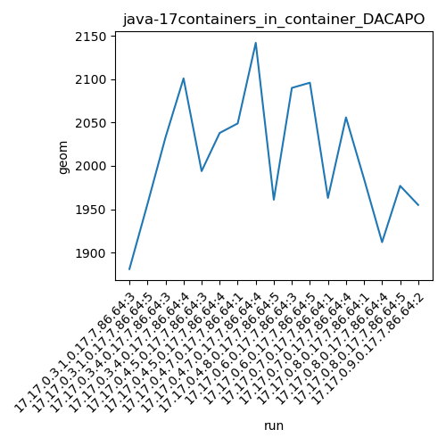
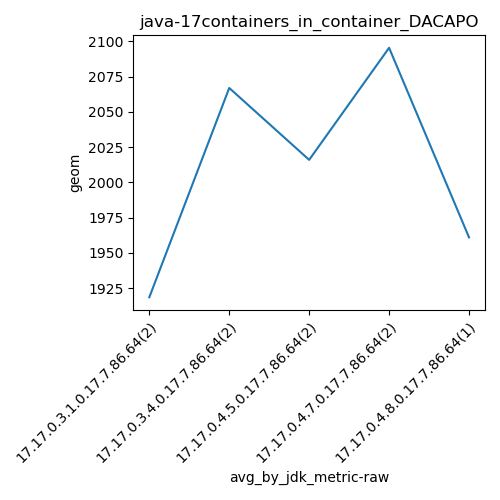
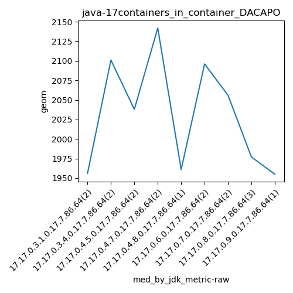
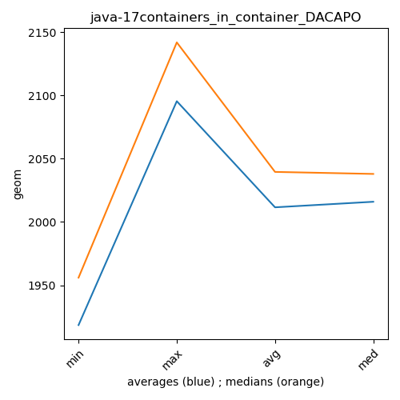

java-17 DACAPO
Context at bottom
/home/jvanek/git/benchmarks-in-nested-virtualisation-toolchain/final_results/containers_in_container_results/containers_in_container_DACAPO
java-17
DACAPO
containers_in_container_DACAPO
final score
Expected number of java-17 JDKs: 9
1st avgmed_alljdks_metric:
/home/jvanek/git/benchmarks-in-nested-virtualisation-toolchain/final_results/result_processing.py /home/jvanek/git/benchmarks-in-nested-virtualisation-toolchain/final_results/containers_in_container_results/containers_in_container_DACAPO geom False
values: [1881, 1956, 2033, 2101, 1994, 2038, 2049, 2142, 1961, 2090, 2096, 1963, 2056, 1985, 1912, 1977, 1955]

Expected number of iterations: 5
final number of values: 17 out of 45
Pass rate: 37.8%
values: (1881, 2142, 2011.1176470588234, 1994)

** accuracy from all jdks and runs
more is better
MIN: 1881
MAX: 2142
AVG: 2011.1176470588234
MED: 1994
Relative differences 1:
MIN-MAX: 12.0 %
MIN-AVG: 6.0 %
MIN-MED: 6.0 %
MAX-MIN: -14.0 %
MAX-AVG: -7.0 %
MAX-MED: -7.0 %
AVG-MED: -1.0 %
stored to java-17.properties. sort | uniq that!
2nd avgmed_by_jdk_metric:
values: [1918.5, 2067.0, 2016.0, 2095.5, 1961.0, 2093.0, 2009.5, 1958.0, 1955.0]

values: [1956, 2101, 2038, 2142, 1961, 2096, 2056, 1977, 1955]

values: (1918.5, 2095.5, 2008.1666666666667, 2009.5)
values: (1955, 2142, 2031.3333333333333, 2038)

** accuracy from all jdks where runs were avged
more is better
MIN: 1918.5
MAX: 2095.5
AVG: 2008.1666666666667
MED: 2009.5
Relative differences 1:
MIN-MAX: 8.0 %
MIN-AVG: 4.0 %
MIN-MED: 5.0 %
MAX-MIN: -9.0 %
MAX-AVG: -4.0 %
MAX-MED: -4.0 %
AVG-MED: 0.0 %
stored to java-17.properties. sort | uniq that!
** accuracy from all jdks where runs were medianed
more is better
MIN: 1955
MAX: 2142
AVG: 2031.3333333333333
MED: 2038
Relative differences 1:
MIN-MAX: 9.0 %
MIN-AVG: 4.0 %
MIN-MED: 4.0 %
MAX-MIN: -10.0 %
MAX-AVG: -5.0 %
MAX-MED: -5.0 %
AVG-MED: 0.0 %
stored to java-17.properties. sort | uniq that!
/home/jvanek/git/benchmarks-in-nested-virtualisation-toolchain/final_results/containers_in_container_results/containers_in_container_JMH
java-17
DACAPO
/home/jvanek/git/benchmarks-in-nested-virtualisation-toolchain/final_results/containers_in_container_results/containers_in_container_SPECJBB
java-17
DACAPO
/home/jvanek/git/benchmarks-in-nested-virtualisation-toolchain/final_results/containers_in_container_results/containers_in_container_RADARGUNs1
java-17
DACAPO
/home/jvanek/git/benchmarks-in-nested-virtualisation-toolchain/final_results/containers_in_container_results/containers_in_container_J2DBENCH
java-17
DACAPO
/home/jvanek/git/benchmarks-in-nested-virtualisation-toolchain/final_results/containers_in_container_results/containers_in_container_RADARGUNs3
java-17
DACAPO
pass rates:
containers_in_container_DACAPO=37.8%
Context:
- containers_in_container_results
- DACAPO